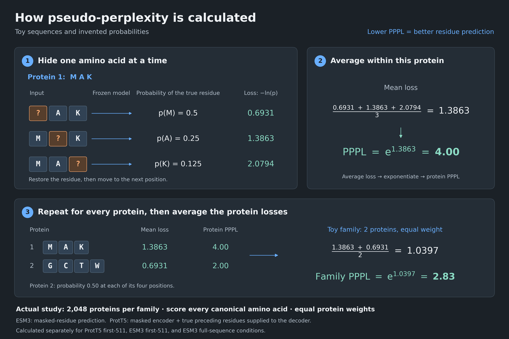
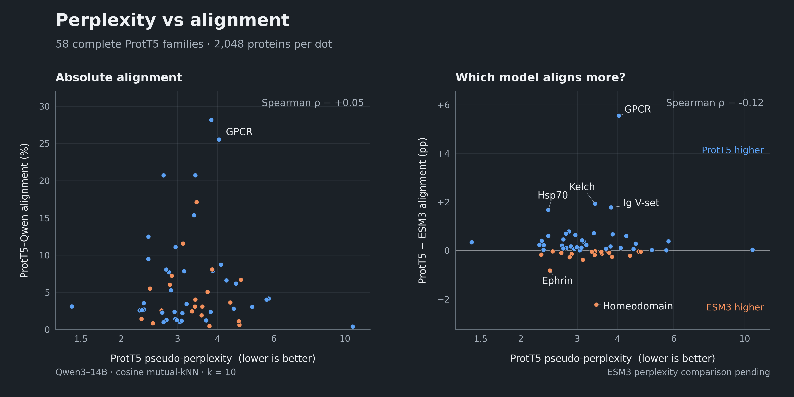
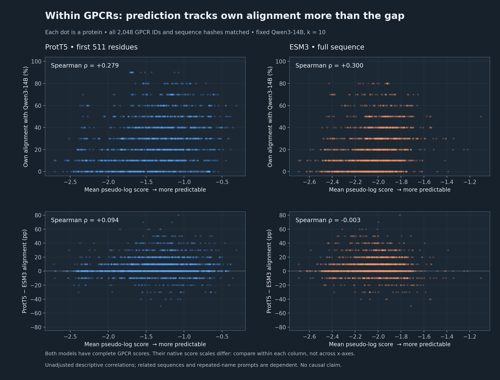

Loading plots…
1. Which protein model agrees more with Qwen?
mKNN = fraction of the ten Qwen neighbors also selected by the protein model, averaged across proteins. Positive gap = ProtT5 higher; negative = ESM3 higher.
Raw alignment table
H1 · Does autoregressiveness explain the ProtT5 advantage?
Hypothesis: ProtT5 might align more with Qwen because ProtT5’s training uses an autoregressive decoder.
Conclusion: not established. The ProtT5 embeddings we compare come from its bidirectional encoder. ESM3’s sequence representations are also bidirectional. “ProtT5 and Qwen both use causal attention for these embeddings” is therefore incorrect. An indirect effect of training remains possible and untested.
| Model / checkpoint size | Training setup | What the extracted states can see | What we actually average for alignment |
|---|---|---|---|
| Qwen3-14B 14.8B parameters | Causal language model: predicts the next text token. | The prompt and continuation up to and including the current token; no later tokens. | Final states at generated-token positions. Input prompt contains the protein name; the sequence is not supplied. Prompt positions provide context but are excluded from the mean. |
| ProtT5 XL UniRef50 ≈3B parameters in the full encoder–decoder; only its encoder is used here | Reconstructs corrupted protein sequences. Bidirectional encoder plus autoregressive decoder during training. | Both left and right within the retained sequence context. Decoder states are not used for these embeddings. | Final encoder states after RMSNorm; mean over non-padding tokens, including EOS. At most 511 residues plus EOS. |
| ESM3 small open 1.4B parameters | Masked-token prediction across sequence, structure and function tracks; our extraction supplies sequence only. | Both left and right within the retained sequence context. | Last-block states before final LayerNorm; mean over non-padding tokens, including BOS/EOS. Sequence cap 2,048 residues; full sequences for these 100–1,000-residue families. |
What “causal” changes
Consider the state at token 3 of a five-token input:
PLM encoder: sees [1] [2] [3] [4] [5]
Schematic only. Averaging Qwen states combines positions with different amounts of preceding context; it does not make each state bidirectional.
How we reached this conclusion
- Checked the model documentation and attention implementation.
- Checked our extraction code: ProtT5 loads
T5EncoderModel; Qwen pools generated-token states. - Found an architecture fact, not a causal experiment showing why the gap occurs.
Correction to “this affects both protein models equally, so it cannot cause the gap”: the same Qwen vectors are used in both comparisons, but their influence need not be equal. Qwen’s neighbor lists can resemble ProtT5’s more than ESM3’s.
Same Qwen reference ≠ equal effect on both overlaps.
Established: both extracted PLM representations are bidirectional; ProtT5’s decoder is unused in alignment extraction. Not established: that autoregressive training is irrelevant, or that Qwen’s causal readout cannot contribute to the gap.
Simple example: why a shared Qwen reference does not cancel
Illustration with k=2, not measured data: suppose ProtT5 selects {A,B} and ESM3 selects {C,D}. A Qwen list {A,B} gives 100% versus 0% overlap. A different Qwen list {A,C} gives 50% versus 50%. In each comparison both PLMs use the same Qwen list, yet changing that list changes the gap.
What would test the remaining hypothesis?
Changing Qwen pooling while holding both PLM vectors fixed would test Qwen-readout sensitivity, not isolate autoregressiveness. Isolating the training objective would require matched training/checkpoint comparisons with other factors controlled. No such experiment was run here. Turning off a causal mask on a pretrained Qwen model would change its inference regime and would not by itself establish a training-objective cause.
Separate PPPL point: ProtT5’s decoder is used for its residue-probability calculation below. Encoder-only alignment and encoder–decoder PPPL are different measurements.
Sources and exact code evidence
- Qwen model card: “Type: Causal Language Models”; 14.8B parameters.
- ProtT5 model card: “encoder-decoder architecture”; approximately 3B parameters for the full model.
- T5 implementation, v4.57.6: distinguishes “non-causal encoder” from “causal decoder”.
- ESM3 author README, v3.4.1.post1: “generative masked language model”; “all-to-all reasoning”; small model 1.4B.
- Local extraction:
embeddings/encoder.py:239–240selectsT5EncoderModel;embeddings/extract_generated_continuation.pyloads Qwen as a causal LM and pools continuation positions;embeddings/extract_plm_esm_sdk.py:195–218reads ESM3 embeddings. Detailed readout audit:output/gap_explanation_20261110/source_review/FACTS.md.
2. Pseudoperplexity for each family
Lower PPPL = the model assigns higher probability to the actual hidden residues. Each family value gives every available scored protein equal weight. Incomplete ESM3 values are labeled estimates with their coverage.
How we calculated pseudoperplexity

mean_logp(sequence) = (1 / M) Σi∈eligible positions ln(pi)
PPPL(sequence) = exp[−mean_logp(sequence)]
PPPL(family) = exp[−(1 / N) Σsequences mean_logp(sequence)]
M = number of scored canonical residues in that sequence’s retained context. N = number of proteins in the family. Family PPPL is the geometric mean of protein PPPLs, not their arithmetic mean.
ProtT5
Mask residue i in the encoder input. Supply the decoder with its start token and the true preceding residues, stopping before i. Read the probability of the true residue i. No sampled/generated prefix.
ESM3
Mask residue i in the sequence input. Read its sequence-head probability for the true residue at i. Other residues in that context remain visible; no decoder prefix is used.
These are model-specific pseudo-likelihood procedures. Their probability scales are not directly interchangeable. A lower PPPL in one model does not by itself establish better protein representations or higher alignment.
Calculation details and an arithmetic example
Probabilities use a softmax over the full model vocabulary. Special tokens and noncanonical residue targets are excluded from the mean; context handling follows the frozen scorer. Prefix scoring does not include residues after position 511. The frozen families have sequences of 100–1,000 residues, so ESM3-full covers their full sequences.
Illustrative example, not a measured protein: target probabilities 0.5, 0.25 and 1 give PPPL = exp[−(ln0.5 + ln0.25 + ln1)/3] = 2.
3. Does lower pseudoperplexity accompany higher alignment?
Family PPPL versus Qwen alignment. Filled points use complete PPPL coverage; open ESM3 diamonds are estimates from available proteins. Each point is one family.

Interactive family values
Colors identify the five highlighted families; gray points are other families. Circles = ProtT5; diamonds = ESM3; open diamonds = incomplete estimates. Cross-model PPPL values use different conditional prediction procedures.
Inspect individual proteins
Available completed sequence scores within the five highlighted families. Individual protein scores are measured; only incomplete family averages are labeled estimates.
Raw protein values (first 100 matching rows; download includes all)
Complete GPCR scores: prediction and alignment

GPCR geometry: what the three statements mean
Descriptive checks on the same 2,048 saved GPCR protein vectors. These plots alone do not explain the alignment gap.
A. ESM3 vectors point more nearly in the same direction
Compare the angle between every pair of protein vectors. 0° = exactly the same direction. The ESM3 distribution sits much closer to 0°.
Median pair angle: ESM3 8.31°, ProtT5 46.53°. Mean pairwise cosine: ESM3 0.9876, ProtT5 0.6756. Similar direction does not mean identical vectors or identical information.
B. After subtracting the mean, a few directions carry most of the variation
Subtract each model’s mean vector first. Then ask what fraction of the remaining spread lies along its five largest principal components. These are fitted directions, not five original coordinates.
C. ESM3 neighbor selection is only slightly less evenly distributed
Count how many other proteins select each protein in their top ten. This uses the original vectors, not the PC-removed vectors.
ESM3: 52 never selected; most selected appears 41 times. ProtT5: 42 never selected; most selected appears 37 times. Both must average ten selections per protein. The curves are very similar; this is a modest difference.
Sources and reproducibility
Plotting code and data are hosted with this page. Download buttons export raw values and completion flags. No model inference was launched to build this dashboard.